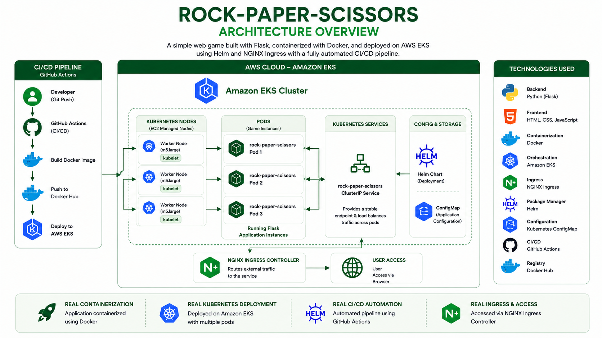
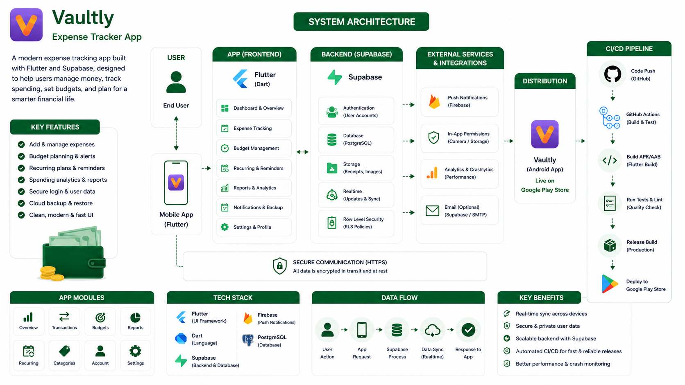
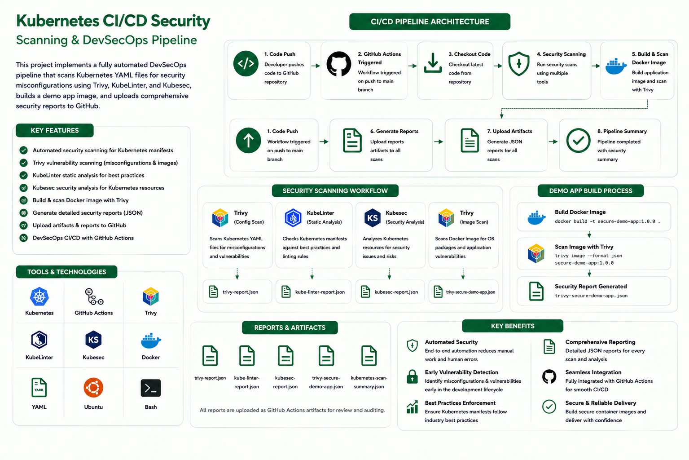
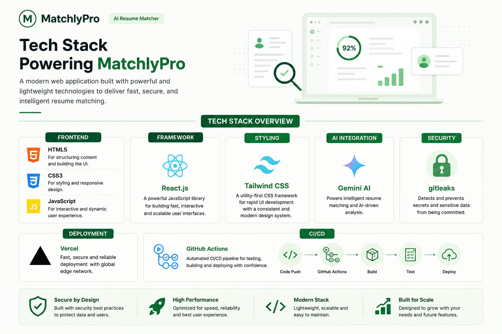
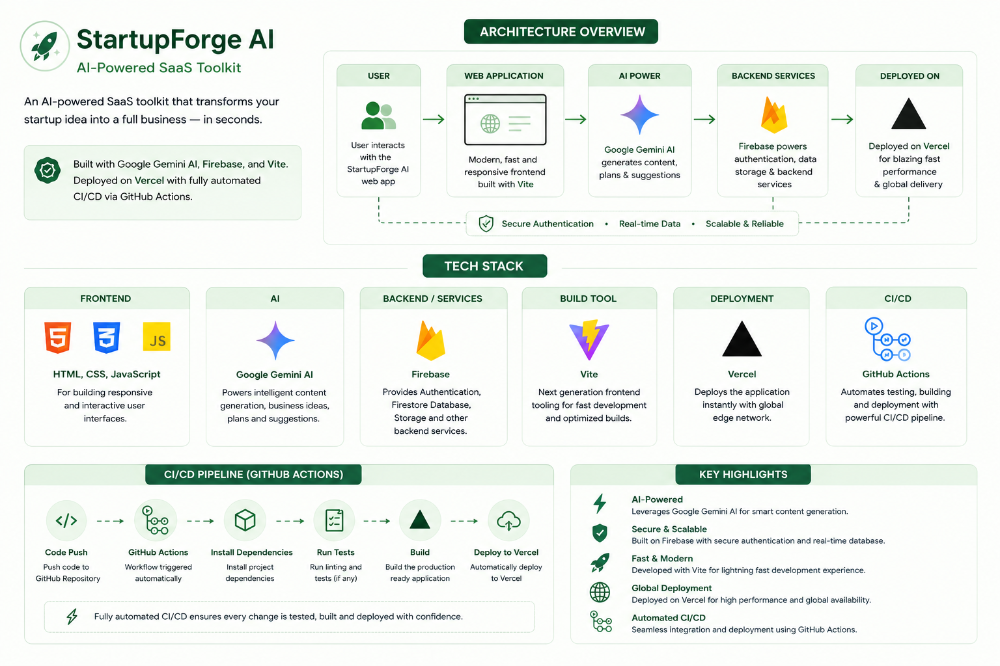

Production Pipelines & Architecture
Real infrastructure I've built and shipped — from CI/CD pipelines and Kubernetes deployments to security scanning and monitoring.

Rock Paper Scissors on AWS EKS
A containerized Flask game deployed on Amazon EKS with Kubernetes, NGINX Ingress, and an automated GitHub Actions delivery pipeline.

Vaultly Expense Tracker
A modern Flutter expense tracker powered by Supabase, with secure authentication, real-time sync, analytics, and automated Play Store delivery.

Kubernetes CI/CD Security Scanning
A DevSecOps pipeline that scans Kubernetes manifests and container images with Trivy, KubeLinter, and Kubesec before publishing detailed security reports.

MatchlyPro AI Resume Matcher
A modern web application that uses AI to match resumes intelligently, with a fast React interface, Tailwind styling, secure practices, and Vercel deployment.

StartupForge AI
An AI-powered SaaS toolkit that transforms a startup idea into a complete business plan with Google Gemini AI, Firebase, and a fast Vite frontend.

Linux Monitoring Tool
A lightweight monitoring tool that collects Linux disk usage statistics, stores historical data in MySQL, and runs in Docker or Kubernetes.